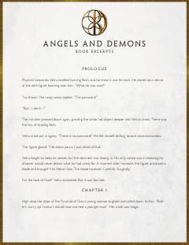

AARobert Lengdonning Illuminati tashkiloti sirlarini fosh etishga qaratilgan hayajonli trilleri.
Garvard professori Robert Lengdon sirli qotillik va qadimiy Illuminati tashkiloti bilan bog'liq fitnani fosh qilish uchun jalb qilinadi. U ilmiy va diniy qarama-qarshiliklar markazida bo'lib, Vatikanni vayron bo'lishdan saqlab qolish uchun poyga boshlaydi.